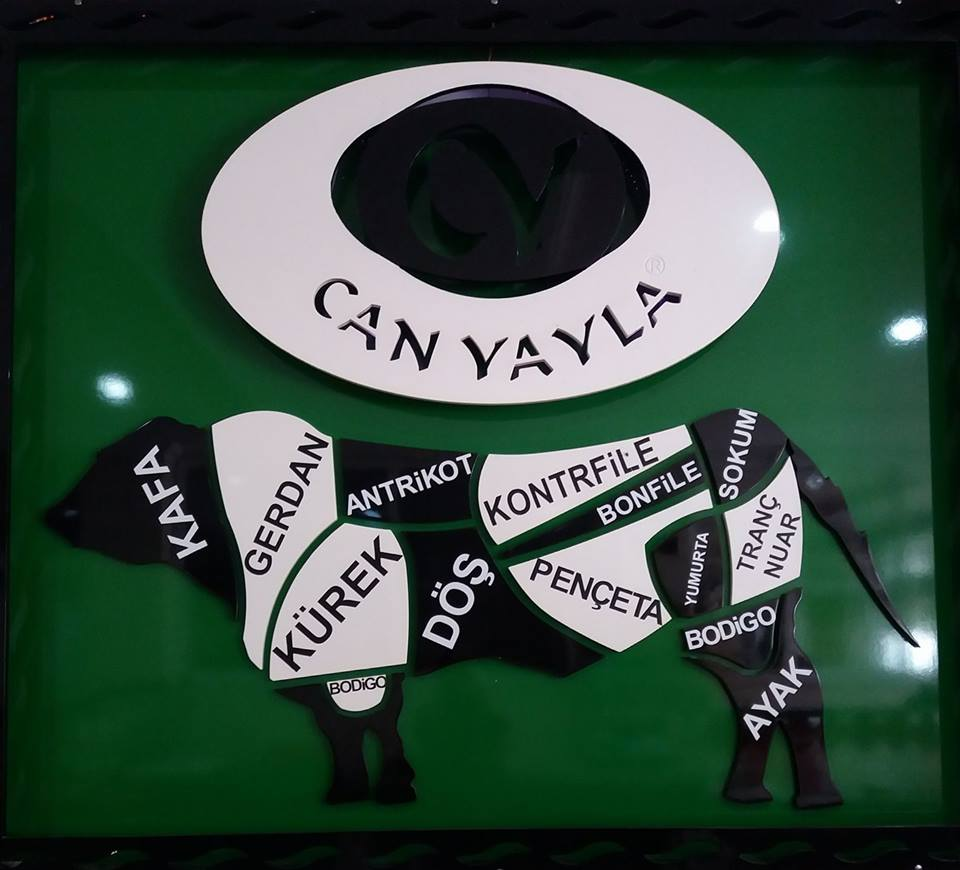

- H A K K I M I Z D A -
Biz Kimiz?
CAN YAYLA Et ve Et Ürünleri, Serinhisar da doğal bitkiler ve kekikle beslenen süt dana ve kuzularından elde edilen mamüllerinin üretim ve pazarlaması konularında faaliyet göstermektedir.
Can Yayla Et ve Et Ürünlerinde temel üretim prensibi "Yemeyeceğimiz Eti Satmıyoruz" olup yıllardır bu kalite anlayışıyla faaliyetler sürdürülmektedir. Çevre yerleşim birimlerinde haklı bir ün'e sahip Serinhisar Hayvancılığı, bu ününü dağlarında yetişen doğal bitkiler ve kekikle beslenen büyük ve küçükbaş hayvanların etinin lezzetinden almaktadır.
Et ve Et Ürünlerimiz, satış mağazamız ve mezbahamızla yıllardır sürdürdüğümüz üretimimiz ISO 22000 ve ISO 9001 belgeleriyle tescillidir. Üretimimiz uzman veteriner hekimler kontrolünde yapılmaktadır.